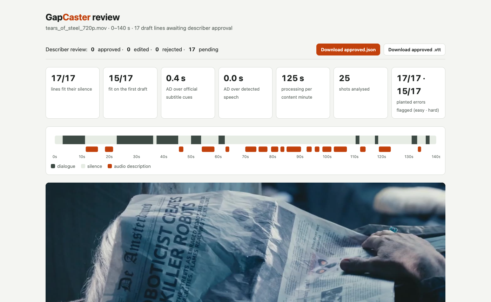

決賽入圍 · ASUS UGen AI League 2026 本地優先
塞得進空檔的口述影像。
GapCaster 為完成的影片草擬一條有時間碼的口述影像軌。它找出對話之間的空檔，按實際可用秒數寫旁白，念出來、量長度、塞不進就加速或改寫，最後由人類撰稿人決定。整套流程跑在一張本地顯卡上——影片不必離開你的機器。
聽出差別
兩段是同一段 2 分 20 秒的影片。一段沒有口述，一段有 GapCaster 塞進空檔的旁白。逐字稿與時間碼都公開。
現在盲人觀眾聽到的版本
只有對白與配樂，沒有畫面資訊。多數華語影片根本沒有口述軌。
同一場戲，被描述出來
17 句，每句都塞進自己的空檔。撰稿人可逐句批准、編輯或退回，只有批准的被混音。
旁白逐字稿（17 句）
00:00:11.350 Multiple rocket engines ignite, shooting bright white and pink flames downward. 00:00:18.420 A bright beam of light shoots up from the industrial site. 00:00:45.550 A caption: Forty years later. 00:00:53.950 A caption: Simulation ready. Two people work at a cluttered electronics bench. 00:01:02.650 A caption: Tears of Steel. 00:01:09.920 A foggy city skyline blends old rooftops with industrial machinery. 00:01:14.780 A person lies motionless on the floor near two lit candles. 00:01:19.380 A headline: Roboticist creates killer robots. 00:01:22.810 The sniper aims his rifle. 00:01:25.070 A circular scope frames a large, stationary mechanical structure with turrets in the fog. 00:01:32.420 The sniper peers through the rifle scope. 00:01:35.420 The airship hovers above the city. 00:01:38.210 The old man lies prone, eyes closed, while the sniper aims. 00:01:42.420 A dark, armed airship hovers over red-roofed buildings, emitting smoke and bright light. 00:01:52.070 The sniper aims his rifle through a scope. 00:01:58.950 The old man raises his head and gestures, while the sniper aims in the background. 00:02:13.250 The old man looks down.
打開這次跑的「撰稿人審核頁」：時間軸、每句的畫面證據、塞入過程與警示。純逐字稿。
已經量了什麼
數字來自 repo 裡公開的兩次跑。2:20 片段同時是開發片段（in-sample）；全片用同一套程式。已知的 miss 也列出來，不藏。
| 指標 | 2:20 片段 | 全片（12:14） |
|---|---|---|
| 鏡頭 · 對話段 · 可用空檔 | 25 · 9 · 9 | 130 · 63 · 44 |
| 塞進空檔的句數 | 17 / 17 | 70 / 71 |
| 初稿就塞進 · 加速 · 改寫 | 15 · 2 · 0 | 60 · 2 · 5 |
| 旁白壓到偵測到的對話 | 0.0 秒 | 0.0 秒 |
| 旁白壓到官方字幕 cue | 0.4 秒 | 5.8 秒（多在 cue 尾） |
| 驗證器抓到明顯植入錯誤 | 17 / 17 | 40 / 40 |
| 驗證器抓到片內換詞/換人 | 15 / 17 | 34 / 40 |
| 每分鐘內容處理時間 | 125 秒 | 137 秒 |
| 峰值模型記憶體 | 33.2 GB | 34 GB |
實測 8B 精簡版：峰值 13.7 GB、每分鐘內容 50 秒、19/19 句塞進空檔——可打開那次跑與取捨。繁體中文 8B 版（中文審核頁）峰值 13.8 GB、15/15 句塞進空檔。已知限制：短句可能在後面的鏡頭出現前就講完（全片 70 句中有 10 句）；文字規則只強制改寫一次；時間是在同時跑其他工作的筆電上量的。完整清單在 README。
六個階段，全部本地
不呼叫 frontier API、不上傳雲端、不需要帳號。唯一的連網是第一次下載開源模型權重。
畫出空檔
Whisper 詞時間戳與 Silero VAD 各自獨立標記對話。台詞結束後 0.25 秒、下一句前 0.30 秒之間的空白才算可用；長空白在鏡頭切點拆開。
讀每個鏡頭
視覺語言模型對每個鏡頭回傳 JSON 事實：誰、在哪、做什麼、螢幕文字、最關鍵的視覺事實、信心分數。角色表讓名字保持一致。
按預算寫
依空檔長度以每秒 2.6 字估算字數（3–18 字）寫旁白；未讀出的螢幕文字排入佇列；工作人員名單、網址會被過濾。
念出來、量長度
Kokoro TTS 念出每一句並量實際長度。塞不下就試 1.08×、1.15×，再用精確溢出量改寫，最多三輪。
規則與驗證
硬規則擋鏡頭語言、臆測、第一人稱。驗證器逐句對照「播出當下畫面上的事實」；沒有判定也標記。
人類批准
撰稿人看到每句的畫面、事實、嘗試與警示，逐句批准／編輯／退回。匯出只混入批准的句子，編輯過的重新對時。

口述影像是時間工藝
多數工具產生文字，假設它塞得進去。口述影像必須塞進兩句對白之間的一個特定區間，還不能蓋住任何一邊。GapCaster 把它當控制迴路：念、量、調、重寫，並把時間證據留給人類檢查，而不是要人相信機器。
為什麼是 Human-Scale
Mozilla 的 Human-Scale AI 要求小而省、在意使用者控制、針對特定社群。GapCaster 的三個回答：
Small.
一張本地加速卡、開源權重、不呼叫 frontier API。Stage I：Qwen3.8-27B（8-bit）讀鏡頭、Whisper large-v3-turbo 聽對話、Kokoro-82M 發聲，峰值 33–34 GB。Human-Scale 8B 版（GapCaster Small）支援英文與繁體中文，單台筆電峰值 13.7–13.8 GB。
Intentional.
影片不離開機器：沒有帳號、沒有遙測、沒有雲端。每一句都帶著來源事實、所有草稿、塞入嘗試、風格警示與驗證判定；撰稿人可以稽核、退回，只有批准的句子被混音。程式 MIT，模型授權逐項記錄。
Tailored.
為盲／低視力觀眾與口述影像撰稿人設計，繞著 AD 的定義性限制：空檔。下一步是華語／台語口述影像，與本地聽眾和撰稿人共同設計——因為好的旁白在每個語言與文化裡聽起來都不一樣。
現在與下一步
聆聽測試：它真的有幫助嗎？
我們正在用描述版片段測試盲／低視力聽眾：15 分鐘、遠端、匿名、不錄音，同一段影片聽兩個版本。這是開發者自己做的研究，不是 Mozilla 官方活動。想參加，或是口述影像工作者想試審核頁，從這裡開始。